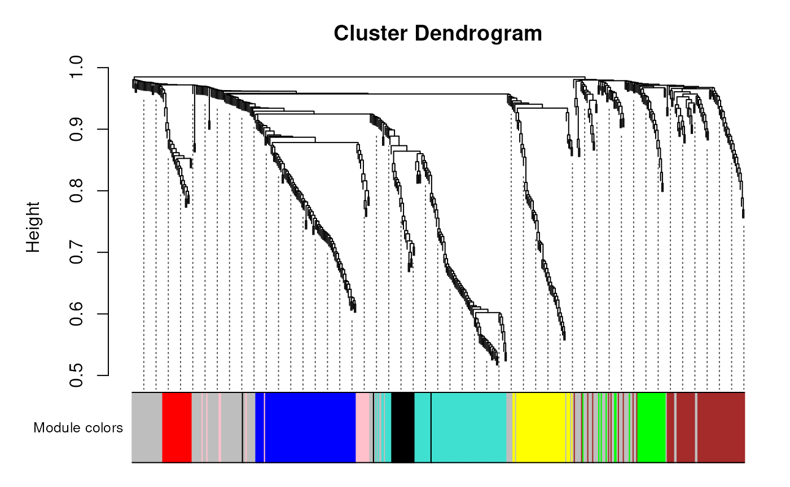
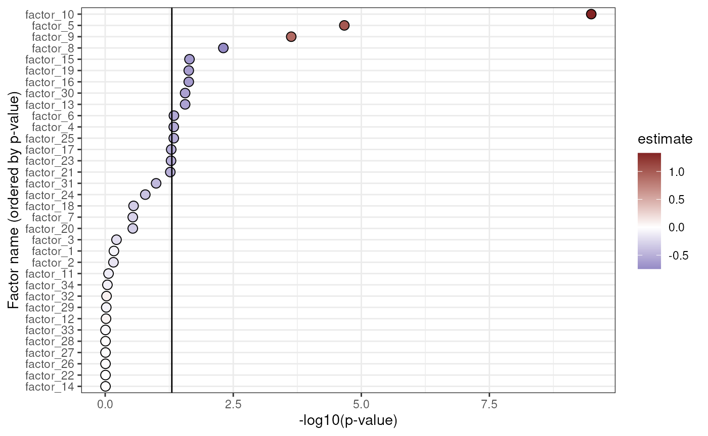
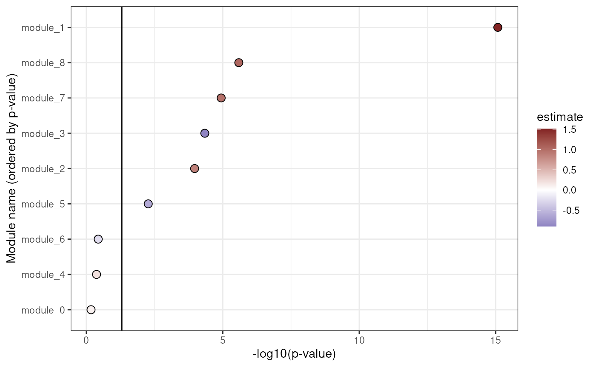
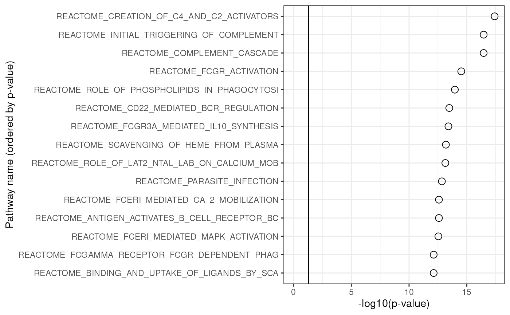
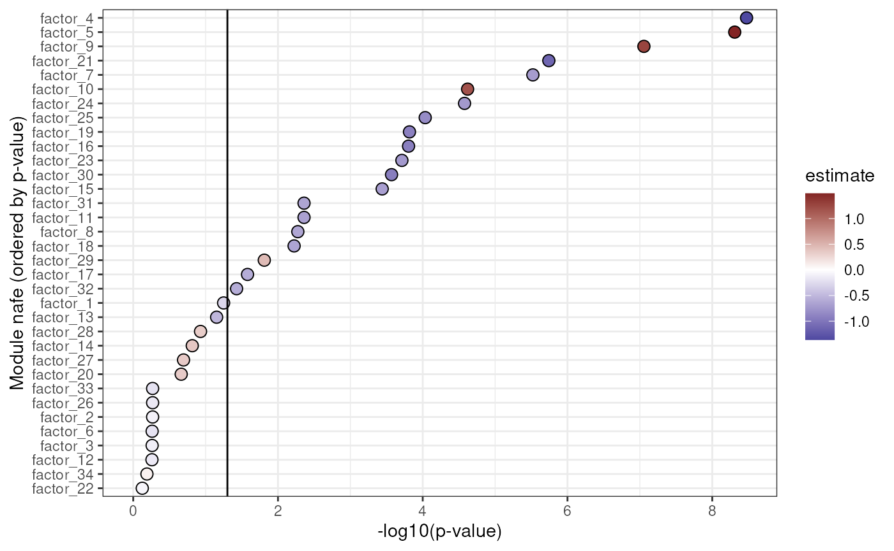
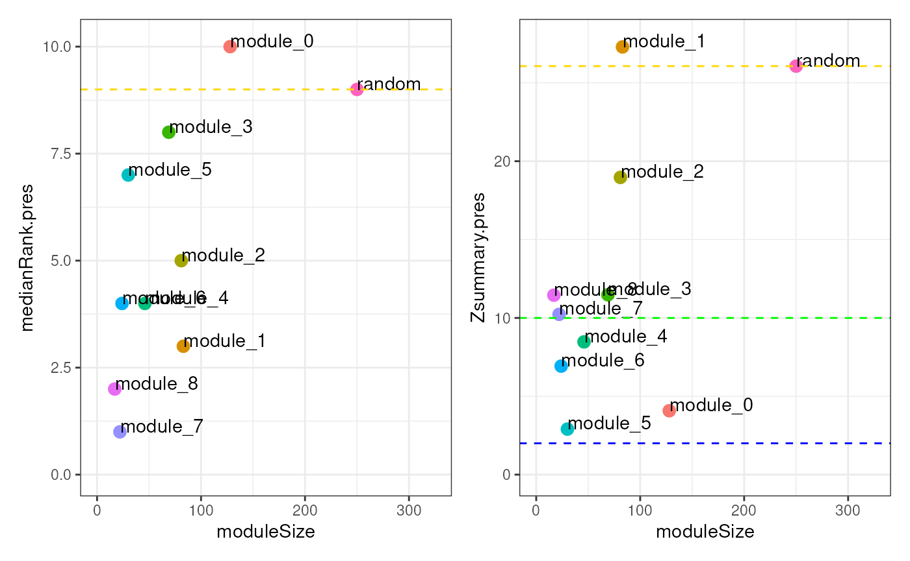

ReducedExperiment
Jack Gisby
2024-11-28
Source:vignettes/ReducedExperiment.Rmd
ReducedExperiment.RmdInstallation
The release version of the package may be installed from Bioconductor, as follows:
if (!requireNamespace("BiocManager", quietly = TRUE)) {
install.packages("BiocManager")
}
BiocManager::install("ReducedExperiment")Or the development version may be installed, from GitHub:
devtools::install_github("jackgisby/ReducedExperiment")Introduction
Dimensionality reduction approaches are often applied to reduce the
complexity of high-dimensional datasets, such as gene expression data
produced by microarrays and RNA sequencing. The
ReducedExperiment containers are able to simultaneously
store high-dimensional experimental data, sample- and feature-level
metadata, and the dimensionally-reduced data.
If you are not familiar with the SummarizedExperiment
containers, we suggest first reading through the package vignette,
either through the Bioconductor
website or by installing the package and running the following.
vignette("SummarizedExperiment", package = "SummarizedExperiment")The key benefit of SummarizedExperiment objects is that
they allow for both assay and metadata to be kept in sync while slicing
and reordering the features or samples of an object. The
ReducedExperiment objects inherit methods from
SummarizedExperiment, so the methods available for a
SummarizedExperiment object will also work on a
ReducedExperiment.
When applying dimensionality reduction to high-dimensional datasets, we introduce additional complexity. In addition to assay, row and column data, we usually generate additional data matrices. For instance, methods like PCA or factor analysis tend to estimate a new matrix, with samples as rows and factors or components as columns. These methods also usually generate a loadings or rotation matrix, with features as rows and factors/components as columns.
The ReducedExperiment containers extend
SummarizedExperiment by allowing for the storage and
slicing of these additional matrices in tandem with our original data.
This package implements ReducedExperiment, a high-level
class that can store an additional matrix with samples as rows and
reduced dimensions as columns. We also implemented two additional child
classes for working with common dimensionality reduction methods.
The results of factor analysis can be stored in the
FactorisedExperiment class, which additionally allows for
the storage of a loadings matrix. The ModularExperiment
class is built to store analyses based on gene modules, such as
“Weighted Gene Correlation Network Analysis” (WGCNA), a popular method
used to analyse transcriptomic datasets.
Introducing ReducedExperiment containers with a case study
There are two ways to build a ReducedExperiment object.
Firstly, we provide convenience functions that both perform
dimensionality reduction and package the results into the appropriate
container class. We implement a method, estimate_factors,
for identifying factors through Independent Component Analysis. We also
provide a wrapper for applying WGCNA, identify_modules.
In this section of the vignette, we will apply both of these methods
to some sample RNA sequencing data. Alternatively, if you have already
applied dimensionality reduction to your data, you may simply construct
a ReducedExperiment object from scratch. For instructions
on how to do this, see the section entitled “Constructing a
ReducedExperiment from scratch”.
The case study data
For the purposes of this vignette, we will be working with some RNA sequencing data generated for patients with COVID-19. The data were published in the following paper: https://www.nature.com/articles/s41467-022-35454-4
The data loaded below are based on the data available from the Zenodo repository: https://zenodo.org/records/6497251
The data were normalised with edgeR’s TMM method and transformed to log-counts per million. Genes with low counts were removed before further filtering to select high-variance genes. For the purposes of this example, only 500 genes were retained and we downsampled the patients.
The COVID-19 data are split up into two cohorts, one for the first wave of COVID-19 (early-mid 2020) and another for the second (early 2021). In this vignette, we will mainly use the first cohort, whereas the second cohort will be used as a validation dataset.
wave1_se <- readRDS(system.file(
"extdata", "wave1.rds",
package = "ReducedExperiment"
))
wave2_se <- readRDS(system.file(
"extdata", "wave2.rds",
package = "ReducedExperiment"
))
wave1_se## class: SummarizedExperiment
## dim: 500 83
## metadata(0):
## assays(1): normal
## rownames(500): ENSG00000004799 ENSG00000007038 ... ENSG00000287935
## ENSG00000288049
## rowData names(2): ensembl_id gene_id
## colnames(83): C37_positive_9 C48_positive_4 ... C85_negative
## C89_negative
## colData names(8): sample_id individual_id ... case_control
## time_from_first_xApplying factor analysis
The first step in performing independent component analysis is to
estimate the optimal number of components. We can do this with the
estimate_stability function. The results of this may be
plotted with plot_stability.
Note that this can take a long time to run. To make this faster, we
could change the BPPARAM term of
estimate_stability to run the analysis in parallel.
The component estimation procedure is based on the maximally stable transcriptome dimension approach, described here: https://bmcgenomics.biomedcentral.com/articles/10.1186/s12864-017-4112-9
Using this method, we can plot the stability of the factors as a function of the number of components. The plot on the left shows a line for each run. We perform ICA for a sequence of components from 10 to 60, increasing the number of components by two each time. So, we run ICA for 10, 12, 14, etc. components and each of these runs produces a line in the plot. The plot on the right displays a single line displaying stability averaged over the runs.
We ideally want to pick the maximal number of components with acceptable stability. Between 30-40 components, the component stability appears to drop off, so we move forward with 35 components.
stability_res <- estimate_stability(
wave1_se,
n_runs = 100,
min_components = 10, max_components = 60, by = 2,
mean_stability_threshold = 0.85,
verbose = FALSE
)
stability_plot <- plot_stability(stability_res)
print(stability_plot$combined_plot)Note that, for the sake of displaying a stability profile representative of real data, the plot was generated for the full dataset, rather than the smaller test dataset we are using in this vignette. You’ll commonly observe an elbow in the stability plot on the left, which in this case appears around 30-40 components.

Now we run the factor analysis with these components. We additionally set a stability threshold of 0.25 to remove components with low stability. This results in the identification of 34 factors.
wave1_fe <- estimate_factors(
wave1_se,
nc = 35,
use_stability = TRUE,
n_runs = 30,
stability_threshold = 0.25
)
wave1_fe## class: FactorisedExperiment
## dim: 500 83 34
## metadata(0):
## assays(2): normal transformed
## rownames(500): ENSG00000004799 ENSG00000007038 ... ENSG00000287935
## ENSG00000288049
## rowData names(2): ensembl_id gene_id
## colnames(83): C37_positive_9 C48_positive_4 ... C85_negative
## C89_negative
## colData names(8): sample_id individual_id ... case_control
## time_from_first_x
## 34 componentsThe output of factor analysis is a FactorisedExperiment object. This is not dissimilar from a SummarizedExperiment object, with some additional slots. The FactorisedExperiment contains an additional matrix for the dimensionally-reduced data (i.e., samples vs. factors) and one for the factor loadings (i.e., genes vs. factors).
We can get the reduced data as so.
# get reduced data for first 5 samples and factors
reduced(wave1_fe)[1:5, 1:5]## factor_1 factor_2 factor_3 factor_4 factor_5
## C37_positive_9 -1.6909747 -0.1230713 -0.64673200 -0.11119477 1.3972446
## C48_positive_4 -0.1725823 -1.3320940 0.09903561 -0.26666390 2.6840856
## C65_positive_15 1.0376609 1.3907660 -1.83762069 -0.27675565 -0.2291595
## C99_positive_13 0.8324329 0.8401592 2.16820328 -0.95320588 1.7979158
## C114_positive_9 0.8091819 -1.3398282 1.02681508 0.04833564 0.4211883And we get the factor loadings below.
# get loadings for first 5 genes and factors
loadings(wave1_fe)[1:5, 1:5]## factor_1 factor_2 factor_3 factor_4 factor_5
## ENSG00000004799 -0.7933532 0.04413147 -1.6614968 -2.67334503 -0.7278725
## ENSG00000007038 -1.2118399 0.09286032 -0.9813305 -0.62207550 -1.0048629
## ENSG00000008516 0.1902868 0.17123996 -0.2609275 -0.91819722 -0.1415753
## ENSG00000009950 -0.7733616 -0.94008770 -0.8200011 -1.56984592 -0.3755558
## ENSG00000011201 -0.6963746 0.99585966 0.8700726 0.09843149 -0.1388988Most of the normal operations that can be performed on SummarizedExperiment objects can also be performed on FactorisedExperiments. We can slice them by samples, features and components, like so.
dim(wave1_fe[1:20, 1:10, 1:5])## Features Samples Components
## 20 10 5Module analysis
Similarly, we can run a module analysis using the weighted gene correlation network analysis (WGCNA) package: https://bmcbioinformatics.biomedcentral.com/articles/10.1186/1471-2105-9-559
The ReducedExperiment package provides wrapper functions for running such an analysis, before packaging them into a ModularExperiment class.
First, we use the assess_soft_threshold function to
determine the soft-thresholding power appropriate for our dataset. By
default, the function selects the minimal power satisfying a minimal
scale free topology fitting index of 0.85 and a maximal
average connectivity of 100. See WGCNA’s
pickSoftThreshold function for more details.
WGCNA::disableWGCNAThreads()##
wave1_fit_indices <- assess_soft_threshold(wave1_se)## Power SFT.R.sq slope truncated.R.sq mean.k. median.k. max.k.
## 1 1 0.4990 7.220 0.751 259.000 260.0000 286.00
## 2 2 0.0113 -0.325 0.014 142.000 138.0000 180.00
## 3 3 0.4010 -1.320 0.239 81.400 75.2000 121.00
## 4 4 0.6150 -1.420 0.512 49.100 42.5000 87.30
## 5 5 0.7940 -1.420 0.739 31.200 24.9000 67.00
## 6 6 0.8020 -1.320 0.747 20.900 15.0000 53.70
## 7 7 0.8850 -1.280 0.852 14.600 9.4500 44.50
## 8 8 0.8960 -1.220 0.868 10.700 6.1800 37.90
## 9 9 0.8810 -1.210 0.852 8.110 4.1200 32.90
## 10 10 0.9160 -1.150 0.899 6.360 2.8400 29.20
## 11 11 0.9230 -1.130 0.908 5.130 2.0300 26.30
## 12 12 0.9530 -1.110 0.946 4.230 1.5100 23.90
## 13 13 0.8790 -1.130 0.857 3.550 1.1300 22.00
## 14 14 0.9390 -1.110 0.935 3.030 0.8310 20.40
## 15 15 0.9610 -1.090 0.960 2.620 0.6300 19.00
## 16 16 0.9390 -1.110 0.931 2.290 0.4900 17.80
## 17 17 0.8590 -1.140 0.824 2.020 0.3760 16.80
## 18 18 0.8790 -1.140 0.849 1.790 0.2990 15.90
## 19 19 0.9050 -1.140 0.883 1.600 0.2440 15.10
## 20 20 0.9660 -1.120 0.962 1.440 0.1990 14.40
## 21 21 0.9300 -1.160 0.914 1.300 0.1590 13.70
## 22 22 0.8750 -1.160 0.841 1.180 0.1310 13.10
## 23 23 0.8100 -1.170 0.756 1.080 0.1070 12.60
## 24 24 0.1450 -1.700 -0.089 0.990 0.0859 12.10
## 25 25 0.9260 -1.180 0.906 0.910 0.0692 11.70
## 26 26 0.9620 -1.170 0.952 0.839 0.0541 11.20
## 27 27 0.9460 -1.160 0.932 0.776 0.0443 10.80
## 28 28 0.9330 -1.160 0.915 0.720 0.0363 10.50
## 29 29 0.9020 -1.160 0.874 0.670 0.0288 10.10
## 30 30 0.9440 -1.130 0.930 0.624 0.0239 9.82
wave1_estimated_power <-
wave1_fit_indices$Power[wave1_fit_indices$estimated_power]
print(paste0("Estimated power: ", wave1_estimated_power))## [1] "Estimated power: 7"Now we can pass our data with the selected power to the
identify_modules function. Since for this example we’ve
filtered out most of the genes that were in the original dataset, we
allow for the identification of smaller modules of genes (10). The
dendrogram is also stored in this object, allowing us to plot the
clusters of genes that are identified.
wave1_me <- identify_modules(
wave1_se,
verbose = 0,
power = wave1_estimated_power,
minModuleSize = 10
)
plotDendro(wave1_me)
In this case we only identify 8 modules (module_0 is not a module itself, but rather represents the unclustered genes, and is coloured in gray in the plot above). Far more modules were identified in the original paper: https://www.nature.com/articles/s41467-022-35454-4#Fig4
This is likely because we are only using a subset of samples and
genes, and we’ve used a different soft thresholding power. While
identify_modules can suggest a soft thresholding power
automatically, it is generally recommended that the user carefully
consider the parameters used to generate modules (e.g., by considering
the output of WGCNA::pickSoftThreshold). For now, however, we will move
forward with our 8 modules.
wave1_me## class: ModularExperiment
## dim: 500 83 9
## metadata(0):
## assays(2): normal transformed
## rownames(500): ENSG00000004799 ENSG00000007038 ... ENSG00000287935
## ENSG00000288049
## rowData names(2): ensembl_id gene_id
## colnames(83): C37_positive_9 C48_positive_4 ... C85_negative
## C89_negative
## colData names(8): sample_id individual_id ... case_control
## time_from_first_x
## 9 componentsThe ModularExperiment functions much like a FactorisedExperiment, with a slot for the dimensionally-reduced data (samples vs. modules) and loadings (a vector containing a value for each gene). There is additionally a slot for the module assignments.
The reduced data contain expression profiles for each module that are representative of the member genes, also referred to as an “eigengene”. We can get these data as in the following chunk.
# get reduced data for first 5 samples and factors
reduced(wave1_me)[1:5, 1:5]## module_0 module_1 module_2 module_3 module_4
## C37_positive_9 -0.8016005 1.7377048 2.67469604 -2.14688522 -0.5620659
## C48_positive_4 0.2296873 -0.1086692 1.45558304 -0.71718161 -0.4690700
## C65_positive_15 0.5254068 2.4265415 0.23275233 -0.83350185 0.3359459
## C99_positive_13 0.6162495 1.3848799 1.48086648 -0.70753542 2.2728971
## C114_positive_9 -0.3227018 0.3288534 -0.04067708 -0.02345718 -0.3241905We can also find out which module each feature is assigned to.
# get assignments for first 5 genes
assignments(wave1_me)[1:5]## module_0 module_5 module_2 module_4
## "ENSG00000004799" "ENSG00000007038" "ENSG00000008516" "ENSG00000009950"
## module_0
## "ENSG00000011201"The ModularExperiment object also stores the loadings,
indicating the alignment of each feature with the corresponding
eigengene.
# get loadings for first 5 genes
loadings(wave1_me)[1:5]## ENSG00000004799 ENSG00000007038 ENSG00000008516 ENSG00000009950 ENSG00000011201
## -0.10868517 0.11835410 0.14225585 0.05915689 -0.03604060Identifying factor and module associations
One thing we might be interested in doing is identifying factors that
are associated with disease outcomes. We can do this with the
associate_components function. First, we can look at the
sample-level data available in the SummarizedExperiment
container.
selected_cols <- c(
"sample_id",
"individual_id",
"case_control",
"sex",
"calc_age"
)
colData(wave1_se)[, selected_cols]## DataFrame with 83 rows and 5 columns
## sample_id individual_id case_control sex
## <character> <character> <character> <character>
## C37_positive_9 C37_positive_9 C37 POSITIVE F
## C48_positive_4 C48_positive_4 C48 POSITIVE M
## C65_positive_15 C65_positive_15 C65 POSITIVE M
## C99_positive_13 C99_positive_13 C99 POSITIVE M
## C114_positive_9 C114_positive_9 C114 POSITIVE M
## ... ... ... ... ...
## C257_negative C257_negative C257 NEGATIVE F
## C64_negative C64_negative C64 NEGATIVE M
## C69_negative C69_negative C69 NEGATIVE M
## C85_negative C85_negative C85 NEGATIVE F
## C89_negative C89_negative C89 NEGATIVE F
## calc_age
## <integer>
## C37_positive_9 82
## C48_positive_4 72
## C65_positive_15 73
## C99_positive_13 60
## C114_positive_9 68
## ... ...
## C257_negative 68
## C64_negative 61
## C69_negative 79
## C85_negative 74
## C89_negative 70In this case, we will focus on the case_control
variable, indicating whether patients are COVID-19 positive or negative.
For each component, we apply linear models that are adjusted for for sex
and age.
f <- "~ case_control + sex + calc_age"
associations_me <- associate_components(wave1_me, method = "lm", formula = f)
associations_fe <- associate_components(wave1_fe, method = "lm", formula = f)Below is a table for the significant associations between the factors
and the case_control variable, encoding COVID-19 infection
status.
associations_fe$summaries[
associations_fe$summaries$term == "case_controlPOSITIVE" &
associations_fe$summaries$adj_pvalue < 0.05,
c("term", "component", "estimate", "stderr", "adj_pvalue")
]## term component estimate
## factor_4_case_controlPOSITIVE case_controlPOSITIVE factor_4 -0.5365225
## factor_5_case_controlPOSITIVE case_controlPOSITIVE factor_5 1.0142974
## factor_6_case_controlPOSITIVE case_controlPOSITIVE factor_6 -0.5454102
## factor_8_case_controlPOSITIVE case_controlPOSITIVE factor_8 -0.7450610
## factor_9_case_controlPOSITIVE case_controlPOSITIVE factor_9 0.9025663
## factor_10_case_controlPOSITIVE case_controlPOSITIVE factor_10 1.3293240
## factor_13_case_controlPOSITIVE case_controlPOSITIVE factor_13 -0.5888254
## factor_15_case_controlPOSITIVE case_controlPOSITIVE factor_15 -0.6457925
## factor_16_case_controlPOSITIVE case_controlPOSITIVE factor_16 -0.6304351
## factor_19_case_controlPOSITIVE case_controlPOSITIVE factor_19 -0.6170465
## factor_25_case_controlPOSITIVE case_controlPOSITIVE factor_25 -0.5326069
## factor_30_case_controlPOSITIVE case_controlPOSITIVE factor_30 -0.5939576
## stderr adj_pvalue
## factor_4_case_controlPOSITIVE 0.2173879 4.586735e-02
## factor_5_case_controlPOSITIVE 0.1932897 2.146815e-05
## factor_6_case_controlPOSITIVE 0.2155776 4.554267e-02
## factor_8_case_controlPOSITIVE 0.2078114 4.939723e-03
## factor_9_case_controlPOSITIVE 0.1992191 2.334042e-04
## factor_10_case_controlPOSITIVE 0.1665895 3.247707e-10
## factor_13_case_controlPOSITIVE 0.2137396 2.752296e-02
## factor_15_case_controlPOSITIVE 0.2132976 2.262750e-02
## factor_16_case_controlPOSITIVE 0.2143364 2.337058e-02
## factor_19_case_controlPOSITIVE 0.2126742 2.337058e-02
## factor_25_case_controlPOSITIVE 0.2167430 4.586735e-02
## factor_30_case_controlPOSITIVE 0.2153104 2.752296e-02We can plot out these results. In the plot below, factors that are “upregulated” in COVID-19 patients are shown in red, whereas “downregulated” factors are in blue. The vertical line indicates significance (i.e., adjusted p-values less than 0.05). There are a number of factors that are significantly up- or down-regulated in COVID-19.
ggplot(
associations_fe$summaries[
associations_fe$summaries$term == "case_controlPOSITIVE",
],
aes(-log10(adj_pvalue),
reorder(component, -log10(adj_pvalue)),
fill = estimate
)
) +
geom_point(pch = 21, size = 3) +
xlab("-log10(p-value)") +
ylab("Factor name (ordered by p-value)") +
geom_vline(xintercept = -log10(0.05)) +
scale_fill_gradient2(low = "#3A3A98", high = "#832424")
A similar plot for our modules shows significant upregulation of modules 1, 2, 7 and 8, along with down-regulation of modules 3 and 5.
ggplot(
associations_me$summaries[
associations_me$summaries$term == "case_controlPOSITIVE",
],
aes(-log10(adj_pvalue),
reorder(component, -log10(adj_pvalue)),
fill = estimate
)
) +
geom_point(pch = 21, size = 3) +
xlab("-log10(p-value)") +
ylab("Module name (ordered by p-value)") +
geom_vline(xintercept = -log10(0.05)) +
scale_fill_gradient2(low = "#3A3A98", high = "#832424")
Finding functional enrichments for factors and modules
Now that we know which of our modules are up- and downregulated in COVID-19, we want to know more about the genes and pathways that are associated with our factors.
As shown before, we know which genes belong to each module by
accessing the module assignments in the ModularExperiment object. We can
also estimate the centrality of the genes in the module, based on the
WGCNA::signedKME function.
module_centrality <- getCentrality(wave1_me)
head(module_centrality)## module feature r rsq rank_r rank_rsq
## 125 module_0 ENSG00000286281 -0.6518679 0.4249318 128 1
## 12 module_0 ENSG00000081041 -0.6080250 0.3696945 127 2
## 37 module_0 ENSG00000151005 -0.5863308 0.3437838 126 3
## 91 module_0 ENSG00000237422 0.5792522 0.3355331 1 4
## 76 module_0 ENSG00000224020 0.5535250 0.3063899 2 5
## 126 module_0 ENSG00000286966 -0.5317176 0.2827236 125 6This indicates the correlation of each feature with the corresponding module “eigengene”. We can also identify the genes that are highly aligned with each factor, as follows:
aligned_features <- getAlignedFeatures(wave1_fe, format = "data.frame")
head(aligned_features[, c("component", "feature", "value")])## component feature value
## ENSG00000165246 factor_1 ENSG00000165246 11.361359
## ENSG00000288049 factor_1 ENSG00000288049 8.756050
## ENSG00000278212 factor_10 ENSG00000278212 4.413615
## ENSG00000077063 factor_10 ENSG00000077063 -3.522138
## ENSG00000204099 factor_10 ENSG00000204099 3.464273
## ENSG00000259316 factor_10 ENSG00000259316 3.096032This shows the value of the loadings for the genes most highly associated with each factor. Some factors display moderate associations with many genes, whereas others show strong associations with just a few genes.
We can also perform pathway enrichment analyses for both factors and
modules. We use the enrichment methods implemented in the
clusterProfiler package. By default, these functions run
gene set enrichment analysis (GSEA) and overrepresentation tests for the
factors and modules, respectively. For the purposes of this vignette,
we’ll just do an overrepresentation analysis for factor 5 and module
1.
TERM2GENE <- get_msigdb_t2g()
factor_5_enrich <- runEnrich(
wave1_fe[, , "factor_5"],
method = "overrepresentation",
as_dataframe = TRUE,
TERM2GENE = TERM2GENE
)
module_1_enrich <- runEnrich(
wave1_me[, , "module_1"],
method = "overrepresentation",
as_dataframe = TRUE,
TERM2GENE = TERM2GENE
)Factor 5 is enriched for the pathway “WP_NETWORK_MAP_OF_SARSCOV2_SIGNALING_PATHWAY”.
## ID pvalue p.adjust
## 1 WP_NETWORK_MAP_OF_SARSCOV2_SIGNALING_PATHWAY 5.031317e-06 5.031317e-06
## geneID
## 1 ENSG00000137959/ENSG00000185745/ENSG00000126709Module 1 was upregulated in COVID-19 patients, and we see that it is primarily enriched for pathways related to complement.
ggplot(
module_1_enrich[1:15, ],
aes(-log10(p.adjust), reorder(substr(ID, 1, 45), -log10(p.adjust)))
) +
geom_point(pch = 21, size = 3) +
xlab("-log10(p-value)") +
ylab("Pathway name (ordered by p-value)") +
expand_limits(x = 0) +
geom_vline(xintercept = -log10(0.05))
Applying factors and modules to new datasets
Sometimes, we might want to calculate sample-level values of our factors and modules in a new dataset. In this instance, we have a second cohort that we might want to validate our results in. The ReducedExperiment package has methods for projecting new data into the factor-space defined previously and for recalculating eigengenes in new data.
Factor projection
The factor projection approach is similar to that applied by the
predict method of prcomp. It uses the loadings
calculated in the original dataset to calculate sample-level scores
given new data. Essentially, it uses these loadings as a weighted score
to perform the projection.
Doing this is very simple, as you can see below. Note, however, that these methods assume that the new data (in this case, the wave 2 data) has been processed in the same way as the original data (in this case, wave 1). By default, the method applies standardisation to the new data using the means and standard deviations calculated in the original data.
Additionally, note that, by default, the projected data are rescaled to have a mean of 0 and standard deviation of 1. So, it cannot be assumed that the projected data are on the same scale as the original data.
With all that in mind, we can apply projection as follows. These datasets were processed and normalised in the same way.
wave2_fe <- projectData(wave1_fe, wave2_se)
wave2_fe## class: FactorisedExperiment
## dim: 500 65 34
## metadata(0):
## assays(1): normal
## rownames(500): ENSG00000004799 ENSG00000007038 ... ENSG00000287935
## ENSG00000288049
## rowData names(2): ensembl_id gene_id
## colnames(65): C147_positive_11 C33_positive_11 ... C33_negative
## C58_negative
## colData names(8): sample_id individual_id ... case_control
## time_from_first_x
## 34 componentsThe new FactorisedExperiment created by projecting the
wave 2 data (above) has the same genes (2184) and factors (34) as the
original FactorisedExperiment (below), but with different
samples (83 vs. 65).
wave1_fe## class: FactorisedExperiment
## dim: 500 83 34
## metadata(0):
## assays(2): normal transformed
## rownames(500): ENSG00000004799 ENSG00000007038 ... ENSG00000287935
## ENSG00000288049
## rowData names(2): ensembl_id gene_id
## colnames(83): C37_positive_9 C48_positive_4 ... C85_negative
## C89_negative
## colData names(8): sample_id individual_id ... case_control
## time_from_first_x
## 34 componentsWhile we will avoid directly comparing the dimensionally-reduced data
from the two cohorts, we can calculate associations between the factors
and modules and COVID-19 status, as we did in the original cohort. In
this dataset there are multiple samples for each patient, so we use a
linear mixed model (method = "lmer") rather than a standard
linear model (method = "lm"). We also add a random
intercept for the patient ID in the model formula.
replication_fe <- associate_components(
wave2_fe,
method = "lmer",
formula = paste0(f, " + (1|individual_id)")
)While there are differences in the most significantly associated modules between the wave 1 and 2 cohorts, the results are broadly similar.
ggplot(
replication_fe$summaries[
replication_fe$summaries$term == "case_controlPOSITIVE",
],
aes(
-log10(adj_pvalue),
reorder(component, -log10(adj_pvalue)),
fill = estimate
)
) +
geom_point(pch = 21, size = 3) +
xlab("-log10(p-value)") +
ylab("Module nafe (ordered by p-value)") +
geom_vline(xintercept = -log10(0.05)) +
scale_fill_gradient2(low = "#3A3A98", high = "#832424") +
expand_limits(x = 0)
And, as we see in the following chunk, the estimated associations between the modules and COVID-19 status (positive vs. negative) have a strong positive correlation.
Differences in the estimated associations between modules and COVID-19 status may be explained by differences in the cohorts. For instance, different SARS-CoV-2 variants were in prevalent at the time the cohorts were sampled, and there were more treatments available for the 2021 (wave 2) cohort.
original_estimates <- associations_fe$summaries$estimate[
associations_fe$summaries$term == "case_controlPOSITIVE"
]
replication_estimates <- replication_fe$summaries$estimate[
replication_fe$summaries$term == "case_controlPOSITIVE"
]
cor.test(original_estimates, replication_estimates)##
## Pearson's product-moment correlation
##
## data: original_estimates and replication_estimates
## t = 9.5767, df = 32, p-value = 6.462e-11
## alternative hypothesis: true correlation is not equal to 0
## 95 percent confidence interval:
## 0.7376086 0.9287552
## sample estimates:
## cor
## 0.8610094Applying modules to new data
Similarly to factors, we can look at how our modules behave in new
data. Below, we use calcEigengenes to do so, and we look at
whether the modules behave similarly with respect to COVID-19 status. As
we saw for factors, there is a reasonable concordance between the
modules in the two datasets.
wave2_me <- calcEigengenes(wave1_me, wave2_se)
replication_me <- associate_components(
wave2_me,
method = "lmer",
formula = paste0(f, " + (1|individual_id)")
)
original_estimates <- associations_me$summaries$estimate[
associations_me$summaries$term == "case_controlPOSITIVE"
]
replication_estimates <- replication_me$summaries$estimate[
replication_me$summaries$term == "case_controlPOSITIVE"
]
cor.test(original_estimates, replication_estimates)##
## Pearson's product-moment correlation
##
## data: original_estimates and replication_estimates
## t = 2.8828, df = 7, p-value = 0.02356
## alternative hypothesis: true correlation is not equal to 0
## 95 percent confidence interval:
## 0.1422098 0.9406294
## sample estimates:
## cor
## 0.7367495Module preservation
We can also consider the preservation of modules. Below, we take our
modules calculated in the Wave 1 dataset, and assess their
reproducibility in the Wave 2 dataset. A variety of statistics are
calculated by WGCNA’s modulePreservation. By default, the
plot_module_preservation function shows us the “medianRank”
and “Zsummary” statistics. You can find out more about these in the
corresponding publication, but
in general we are interested in modules with higher Zsummary scores. In
short, we can consider modules above the blue line (Z > 2) to be
moderately preserved and modules above the green line (Z > 10) to be
highly preserved. We see that modules 1 and 2 have relatively high
preservation in the Wave 2 dataset, whereas modules 5 and 0 (our
unclustered genes) display relatively low preservation.
# Using a low number of permutations for the vignette
mod_pres_res <- module_preservation(
wave1_me,
wave2_se,
verbose = 0,
nPermutations = 5
)
plot_module_preservation(mod_pres_res)
Extending the ReducedExperiment class
The SummarizedExperiment package includes a detailed
vignette explaining how to derive new containers from the
SummarizedExperiment class.
vignette("Extensions", package = "SummarizedExperiment")The ReducedExperiment containers may be extended in a
similar fashion. In this package, we implemented
ReducedExperiment and two derivative classes,
ModularExperiment and FactorisedExperiment.
While these are convenient for working with the output of module and
factor analysis, respectively, other dimensionality reduction approaches
may require the incorporation of additional components and methods.
For instance, we could define a PCAExperiment class for
storing the output of stats::prcomp (i.e., Principal
Components Analysis, or PCA). The function produces the following: *
x: The reduced data, which we will store in the existing
ReducedExperiment reduced slot. *
rotation: The feature loadings, for which we will create a
new slot, * sdev: The standard deviations of the principal
components, for which we will create a new slot. * center
and scale: The centering and scaling used, which we will
store in their existing ReducedExperiment slots.
PCAExperiment <- setClass(
"PCAExperiment",
contains = "ReducedExperiment",
slots = representation(
rotation = "matrix",
sdev = "numeric"
)
)We may then run stats::prcomp on our data and store the
output in a PCAExperiment container. We give the original
SummarizedExperiment object as an argument, and we also
supply the outputs of stats::prcomp to the slots defined
for ReducedExperiment and the new slots defined above for
PCAExperiment.
prcomp_res <- stats::prcomp(t(assay(wave1_se)), center = TRUE, scale. = TRUE)
my_pca_experiment <- PCAExperiment(
wave1_se,
reduced = prcomp_res$x,
rotation = prcomp_res$rotation,
sdev = prcomp_res$sdev,
center = prcomp_res$center,
scale = prcomp_res$scale
)
my_pca_experiment## class: PCAExperiment
## dim: 500 83 83
## metadata(0):
## assays(1): normal
## rownames(500): ENSG00000004799 ENSG00000007038 ... ENSG00000287935
## ENSG00000288049
## rowData names(2): ensembl_id gene_id
## colnames(83): C37_positive_9 C48_positive_4 ... C85_negative
## C89_negative
## colData names(8): sample_id individual_id ... case_control
## time_from_first_x
## 83 componentsWe can retrieve the principal components.
reduced(my_pca_experiment)[1:5, 1:5]## PC1 PC2 PC3 PC4 PC5
## C37_positive_9 -22.648920 2.073466 -8.868433 4.937109 -0.4326127
## C48_positive_4 -10.432551 6.505781 -7.716721 -3.955820 6.5379878
## C65_positive_15 -13.971056 -10.765106 3.059072 2.940002 2.0719260
## C99_positive_13 -18.902753 1.955157 8.360083 -6.745072 2.4953812
## C114_positive_9 -1.939066 -3.262649 -2.722028 -1.963664 6.3567510But to retrieve our new rotation matrix we need to
define a “getter” method.
setGeneric("rotation", function(x, ...) standardGeneric("rotation"))## [1] "rotation"
setMethod("rotation", "PCAExperiment", function(x, withDimnames = TRUE) {
return(x@rotation)
})
rotation(my_pca_experiment)[1:5, 1:5]## PC1 PC2 PC3 PC4
## ENSG00000004799 -0.010245337 0.02572064 0.0393218628 5.047993e-02
## ENSG00000007038 0.026332021 -0.02255524 0.0107295922 -4.530682e-02
## ENSG00000008516 -0.070317116 0.08858630 -0.0124291253 7.538345e-05
## ENSG00000009950 -0.015691540 0.02310483 0.0511868032 1.173290e-01
## ENSG00000011201 -0.008071982 0.04992057 -0.0007111778 -8.025871e-03
## PC5
## ENSG00000004799 0.06974641
## ENSG00000007038 -0.06941132
## ENSG00000008516 -0.03389891
## ENSG00000009950 0.02693113
## ENSG00000011201 0.01287611And to change the values of the rotation matrix we must
also define a setter:
setGeneric("rotation<-", function(x, ..., value) standardGeneric("rotation<-"))## [1] "rotation<-"
setReplaceMethod("rotation", "PCAExperiment", function(x, value) {
x@rotation <- value
validObject(x)
return(x)
})
# Set the value at position [1, 1] to 10 and get
rotation(my_pca_experiment)[1, 1] <- 10
rotation(my_pca_experiment)[1:5, 1:5]## PC1 PC2 PC3 PC4
## ENSG00000004799 10.000000000 0.02572064 0.0393218628 5.047993e-02
## ENSG00000007038 0.026332021 -0.02255524 0.0107295922 -4.530682e-02
## ENSG00000008516 -0.070317116 0.08858630 -0.0124291253 7.538345e-05
## ENSG00000009950 -0.015691540 0.02310483 0.0511868032 1.173290e-01
## ENSG00000011201 -0.008071982 0.04992057 -0.0007111778 -8.025871e-03
## PC5
## ENSG00000004799 0.06974641
## ENSG00000007038 -0.06941132
## ENSG00000008516 -0.03389891
## ENSG00000009950 0.02693113
## ENSG00000011201 0.01287611To fully flesh out our class we would also need to consider: *
Defining getters and setters for the sdev slot *
Implementing a constructor method to make creating
PCAExperiment simpler and add sensible defaults *
Implementing a method to check the validity of our object * Modifying
existing methods, such as subsetting operations (i.e., ]),
to handle the new slots we have introduced
For the ModularExperiment and
FactorisedExperiment classes, we additionally implemented a
variety of methods specific to the type of data they store. Since the
results of PCA are similar to that of factor analysis, in practice it
would likely be more straightforward to simply store these results in a
FactorisedExperiment.
Constructing a ReducedExperiment from scratch
If you have already applied dimensionality reduction to your data,
you may be able to package the results into one of the
ReducedExperiment containers. Below, we construct a
FactorisedExperiment container based on the results of PCA
applied to gene expression data. This container is appropriate, because
we can store the sample-level principal components in the
reduced slot of the object, and we may store the rotation
matrix returned by stats::prcomp to the
loadings slot.
To construct our FactorisedExperiment, we provide a
SummarizedExperiment as our first argument. In this case we
reconstruct our SummarizedExperiment for demonstration
purposes, but if you have already constructed a
SummarizedExperiment you may simply pass this as the first
argument.
We then pass the results of stats::prcomp to the
object’s slots. This object is now ready to work with as described in
the section above (“Introducing ReducedExperiment
containers with a case study”).
# Construct a SummarizedExperiment (if you don't already have one)
expr_mat <- assay(wave1_se)
pheno_data <- colData(wave1_se)
se <- SummarizedExperiment(
assays = list("normal" = expr_mat),
colData = pheno_data
)
# Calculate PCA with prcomp
prcomp_res <- stats::prcomp(t(assay(se)), center = TRUE, scale. = TRUE)
# Create a FactorisedExperiment container
fe <- FactorisedExperiment(
se,
reduced = prcomp_res$x,
loadings = prcomp_res$rotation,
stability = prcomp_res$sdev,
center = prcomp_res$center,
scale = prcomp_res$scale
)
fe## class: FactorisedExperiment
## dim: 500 83 83
## metadata(0):
## assays(1): ''
## rownames(500): ENSG00000004799 ENSG00000007038 ... ENSG00000287935
## ENSG00000288049
## rowData names(0):
## colnames(83): C37_positive_9 C48_positive_4 ... C85_negative
## C89_negative
## colData names(0):
## 83 componentsVignette references
This vignette used publicly available gene expression data (RNA sequencing) from the following publication:
- “Multi-omics identify falling LRRC15 as a COVID-19 severity marker
and persistent pro-thrombotic signals in convalescence” (https://doi.org/10.1038/s41467-022-35454-4)
- Gisby et al., 2022
- Zenodo data deposition (https://zenodo.org/doi/10.5281/zenodo.6497250)
The stability-based ICA algorithm implemented in this package for identifying latent factors is based on the ICASSO algorithm, references for which can be found below:
- “Icasso: software for investigating the reliability of ICA estimates
by clustering and visualization” (https://doi.org/10.1109/NNSP.2003.1318025)
- Himberg et al., 2003
- “stabilized-ica” Python package (https://github.com/ncaptier/stabilized-ica)
- Nicolas Captier
The estimate_stability function is based on the related
Most Stable Transcriptome Dimension approach, which also has a Python
implementation provided by the stabilized-ica Python package.
- “Determining the optimal number of independent components for
reproducible transcriptomic data analysis” (https://doi.org/10.1186/s12864-017-4112-9)
- Kairov et al., 2017
Identification of coexpressed gene modules is carried out through the Weighted Gene Correlation Network Analysis (WGCNA) framework
- “WGCNA: an R package for weighted correlation network analysis” (https://doi.org/10.1186/1471-2105-9-559)
- Langfelder and Horvath, 2008
- “WGCNA” R package (https://cran.r-project.org/web/packages/WGCNA/index.html)
- “Is My Network Module Preserved and Reproducible?” (https://doi.org/10.1371/journal.pcbi.1001057)
- Langfelder, Luo, Oldham and Horvath, 2011
Session Information
Here is the output of sessionInfo() on the system on which this document was compiled:
## R version 4.4.2 (2024-10-31)
## Platform: x86_64-pc-linux-gnu
## Running under: Ubuntu 24.04.1 LTS
##
## Matrix products: default
## BLAS: /usr/lib/x86_64-linux-gnu/openblas-pthread/libblas.so.3
## LAPACK: /usr/lib/x86_64-linux-gnu/openblas-pthread/libopenblasp-r0.3.26.so; LAPACK version 3.12.0
##
## locale:
## [1] LC_CTYPE=en_US.UTF-8 LC_NUMERIC=C
## [3] LC_TIME=en_US.UTF-8 LC_COLLATE=en_US.UTF-8
## [5] LC_MONETARY=en_US.UTF-8 LC_MESSAGES=en_US.UTF-8
## [7] LC_PAPER=en_US.UTF-8 LC_NAME=C
## [9] LC_ADDRESS=C LC_TELEPHONE=C
## [11] LC_MEASUREMENT=en_US.UTF-8 LC_IDENTIFICATION=C
##
## time zone: UTC
## tzcode source: system (glibc)
##
## attached base packages:
## [1] stats4 stats graphics grDevices utils datasets methods
## [8] base
##
## other attached packages:
## [1] ggplot2_3.5.1 ReducedExperiment_0.99.3
## [3] SummarizedExperiment_1.36.0 Biobase_2.66.0
## [5] GenomicRanges_1.58.0 GenomeInfoDb_1.42.0
## [7] IRanges_2.40.0 S4Vectors_0.44.0
## [9] BiocGenerics_0.52.0 MatrixGenerics_1.18.0
## [11] matrixStats_1.4.1 BiocStyle_2.34.0
##
## loaded via a namespace (and not attached):
## [1] splines_4.4.2 ggplotify_0.1.2 filelock_1.0.3
## [4] tibble_3.2.1 R.oo_1.27.0 preprocessCore_1.68.0
## [7] rpart_4.1.23 lifecycle_1.0.4 httr2_1.0.7
## [10] fastcluster_1.2.6 doParallel_1.0.17 lattice_0.22-6
## [13] MASS_7.3-61 backports_1.5.0 magrittr_2.0.3
## [16] Hmisc_5.2-0 sass_0.4.9 rmarkdown_2.29
## [19] jquerylib_0.1.4 yaml_2.3.10 ggtangle_0.0.4
## [22] cowplot_1.1.3 DBI_1.2.3 minqa_1.2.8
## [25] RColorBrewer_1.1-3 abind_1.4-8 zlibbioc_1.52.0
## [28] purrr_1.0.2 R.utils_2.12.3 msigdbr_7.5.1
## [31] yulab.utils_0.1.8 nnet_7.3-19 rappdirs_0.3.3
## [34] GenomeInfoDbData_1.2.13 enrichplot_1.26.2 ggrepel_0.9.6
## [37] tidytree_0.4.6 moments_0.14.1 pkgdown_2.1.1
## [40] codetools_0.2-20 DelayedArray_0.32.0 DOSE_4.0.0
## [43] xml2_1.3.6 tidyselect_1.2.1 aplot_0.2.3
## [46] UCSC.utils_1.2.0 farver_2.1.2 lme4_1.1-35.5
## [49] BiocFileCache_2.14.0 dynamicTreeCut_1.63-1 base64enc_0.1-3
## [52] jsonlite_1.8.9 Formula_1.2-5 survival_3.7-0
## [55] iterators_1.0.14 systemfonts_1.1.0 foreach_1.5.2
## [58] tools_4.4.2 progress_1.2.3 treeio_1.30.0
## [61] ragg_1.3.3 ica_1.0-3 Rcpp_1.0.13-1
## [64] glue_1.8.0 gridExtra_2.3 SparseArray_1.6.0
## [67] xfun_0.49 qvalue_2.38.0 dplyr_1.1.4
## [70] withr_3.0.2 numDeriv_2016.8-1.1 BiocManager_1.30.25
## [73] fastmap_1.2.0 boot_1.3-31 fansi_1.0.6
## [76] digest_0.6.37 R6_2.5.1 gridGraphics_0.5-1
## [79] textshaping_0.4.0 colorspace_2.1-1 GO.db_3.20.0
## [82] biomaRt_2.62.0 RSQLite_2.3.8 R.methodsS3_1.8.2
## [85] tidyr_1.3.1 utf8_1.2.4 generics_0.1.3
## [88] data.table_1.16.2 prettyunits_1.2.0 httr_1.4.7
## [91] htmlwidgets_1.6.4 S4Arrays_1.6.0 pkgconfig_2.0.3
## [94] gtable_0.3.6 blob_1.2.4 impute_1.80.0
## [97] XVector_0.46.0 clusterProfiler_4.14.3 htmltools_0.5.8.1
## [100] carData_3.0-5 bookdown_0.41 fgsea_1.32.0
## [103] scales_1.3.0 png_0.1-8 ggfun_0.1.7
## [106] knitr_1.49 rstudioapi_0.17.1 reshape2_1.4.4
## [109] checkmate_2.3.2 nlme_3.1-166 curl_6.0.1
## [112] nloptr_2.1.1 cachem_1.1.0 stringr_1.5.1
## [115] parallel_4.4.2 foreign_0.8-87 AnnotationDbi_1.68.0
## [118] desc_1.4.3 pillar_1.9.0 grid_4.4.2
## [121] vctrs_0.6.5 car_3.1-3 dbplyr_2.5.0
## [124] cluster_2.1.6 htmlTable_2.4.3 evaluate_1.0.1
## [127] cli_3.6.3 compiler_4.4.2 rlang_1.1.4
## [130] crayon_1.5.3 labeling_0.4.3 plyr_1.8.9
## [133] fs_1.6.5 stringi_1.8.4 WGCNA_1.73
## [136] BiocParallel_1.40.0 babelgene_22.9 lmerTest_3.1-3
## [139] munsell_0.5.1 Biostrings_2.74.0 lazyeval_0.2.2
## [142] GOSemSim_2.32.0 Matrix_1.7-1 hms_1.1.3
## [145] patchwork_1.3.0 bit64_4.5.2 KEGGREST_1.46.0
## [148] igraph_2.1.1 memoise_2.0.1 bslib_0.8.0
## [151] ggtree_3.14.0 fastmatch_1.1-4 bit_4.5.0
## [154] gson_0.1.0 ape_5.8